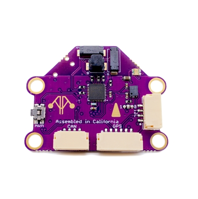
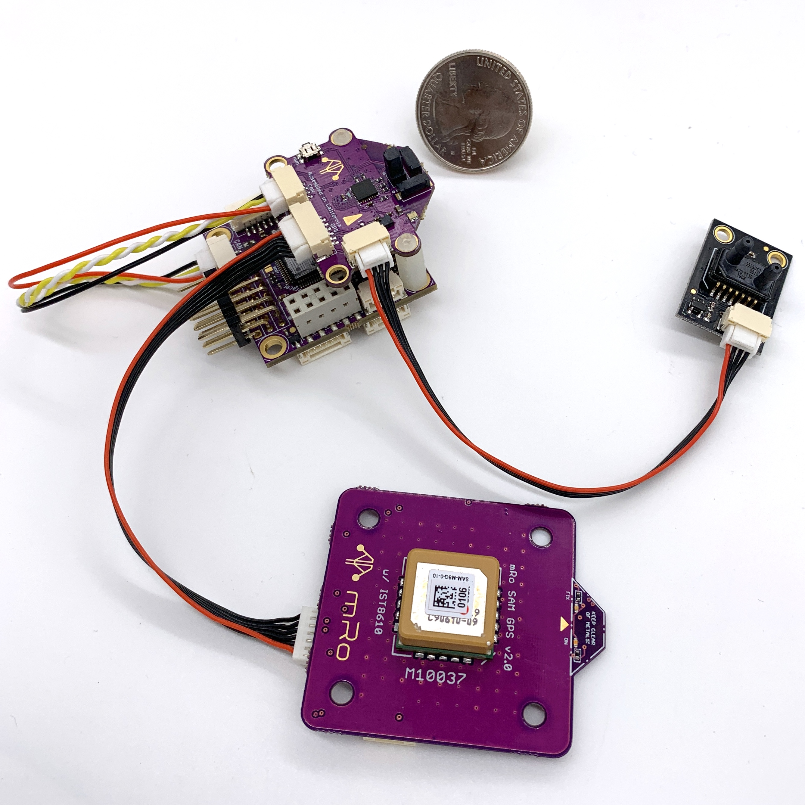

mRobotics KitCAN CAN/DroneCAN Adapter Node+Compass+Baro¶
The next generation of integration from the mRo CAN/DroneCAN Adapter Node, the KitCAN integrates an ultra high precision magnetometer and barometer, in addition to providing an easy means of interfacing conventional GPS and Airspeed Sensors to DroneCAN, using a single CAN bus connection to the autopilot. It also includes an RGB LED and Arm Switch/Button.
Features¶
DroneCAN to GPS (UART interface)
DroneCAN to I2C Airspeed Sensor (MS5525 default configuration) and/or MAGNETOMETER (autodetect)
- DroneCAN integrated peripherals:
RM3100 High Precision Magnetometer
DPS310 Barometer
RGB LED
Safety Switch
JST-GH Connectors
Mounting Holes: 14mm x 31.5mm, 3.3mm diameter
Pinouts¶
GPS Port
Pin |
Signal Name |
Voltage/Tolerance |
|---|---|---|
1 (red) |
VCC |
5V |
2 |
TX (data out) |
3.3V |
3 |
RX (data in) |
3.3V/5V |
4 |
I2C SDA |
3.3V/5V |
5 |
I2C SCL |
3.3V/5V |
6 |
GND |
– |
CAN Port
Pin |
Signal Name |
Voltage/Tolerance |
|---|---|---|
1 (red) |
VCC |
5V |
2 |
CAN_H |
CAN bus |
3 |
CAN_L |
CAN bus |
4 |
GND |
– |
I2C Port
Pin |
Signal Name |
Voltage/Tolerance |
|---|---|---|
1 (red) |
VCC |
5V |
2 |
I2C SDA |
3.3V/5V |
3 |
I2C SCL |
3.3V/5V |
4 |
GND |
– |
Note
As delivered, the KitCAN will discover a MS5525 Airspeed sensor and/or any standard ArduPilot supported I2C Magnetometer that is connected to its I2C external bus
Typical System¶
In this case, the Kitcan is connected to an mRo Pixracer autopilot via CAN and is providing the intefaces for a MS5525 airspeed sensor and a typical GPS/Compass combo, the mRo SAM GPS + IST8308 Mag
{kind=link}
Setup¶
Verify the following parameters are set on your autopilot via your ground station.
CAN_P1_DRIVER = 1 (assuming its on the first CAN bus of the autopilot)
GPS_TYPE = 9 (DroneCAN) or if it will be the secondary GPS, set instead
GPS_TYPE2 = 9 (DroneCAN)
Reboot
Make sure the DroneCAN compass driver is not disabled. (COMPASS_TYPEMASK bit 9 should not be set).
If your controller has multiple compasses attached already, you may want to set the attached compass as a higher priority than others, if it has better precision or performance.
To enable the integrated I2C RGB LED set:
NTF_LED_TYPES bit 5 (DroneCAN) should be set in the autopilot.
The integrated safety switch is automatically used, if the autopilot has enabled the use of safety switches via BRD_SAFETY_DEFLT is “1” (default). (BRD_SAFETYENABLE in older firmware versions)
If you want to enable an attached I2C airspeed sensor, set:
ARSPD_TYPE = 8 (DroneCAN)
If the attached sensor is not an MS5525 type with I2C address 0x76, then you must access your KitCAN’s CAN parameters to select Airspeed type being attached to the adapter. Using Mission Planner (or DroneCAN GUI), go to the menu SETUP/Optional Hardware/DroneCAN/SLCan Mode CAN1/Parameters. Once the CAN Adapters parameters appear, change the following (this changes them inside the DroneCAN adapter, NOT the autopilot, allowing the adapter to use the correct driver and convert the information to DroneCAN airspeed format):
ARSPD_TYPE = 4 (is default for an I2C-MS5525 with an 0x76 address which prevents conflict with the DSP310 integrated onboard with address 0x77). If another sensor is used, change the type to match that sensor.
ARSPD_USE = 1
ARSPD_BUS = 0
Then reboot.
Firmware¶
This device uses the “f303-M100025” firmware located at https://firmware.ardupilot.org/AP_Periph. See the SLCAN section of DroneCAN advanced setup for downloading instructions, if changes are desired or updates become available.